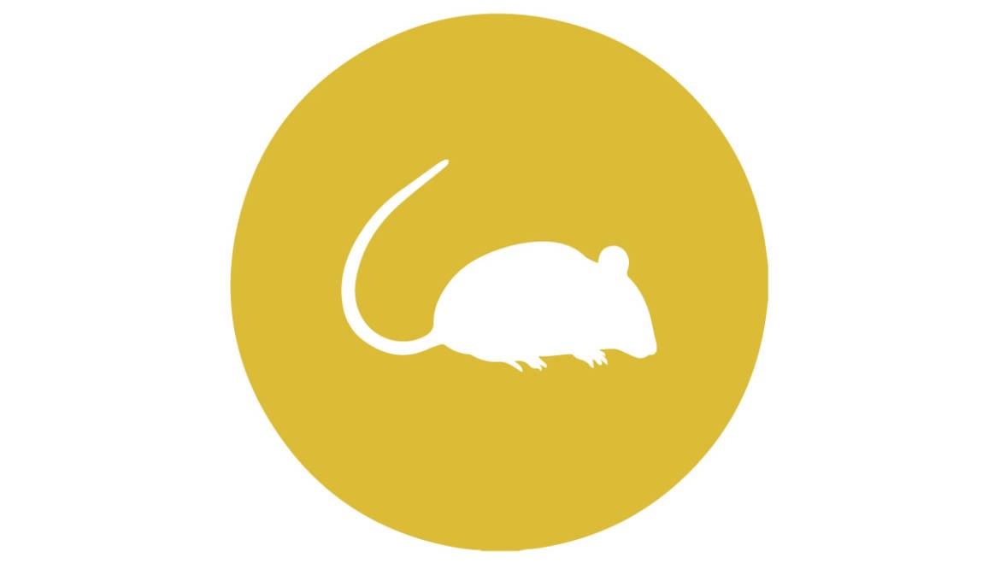

MUĞLA DELTA İLAÇLAMA
Fareler
Muğla Delta İlaçlama

FARELER
Fare , kemiriciler (Rodentia) takımının Myomorpha alt takımından, başta ev faresi ( Mus musculus ) olmak üzere çok sayıda küçük memelinin ortak adı.
Belirli bir taksonomik gruba karşılık gelmeyen “fare” adı, bilimsel adlandırmada özellikle Muridae familyasının üyeleri ile Cricetidae familyasının Hespromyini oymağı (Yeni Dünya fareleri) için kullanılır. Bununla birlikte Muridae familyasının Rattus cinsini oluşturan ve halk arasında lağım faresi ya da keme olarak da bilinen kemiricilere sıçan denilir. Cricetidae familyasının Microtus cinsini oluşturan ve tarla faresi olarak da bilinen kemiriciler ise fare türü değildir.
Özellikleri
Çok hızlı kaçabilen ve çok hızlı üreyen hayvanlardır, yeryüzünün bütün karalarına dağılmışlardır.
Yanaklarından omuzlarına kadar inen küçük astarlı iki dış çene keseleri vardır. Fareler bu keselerde yiyecek taşırlar, temizlemek gerektiğinde de içini dışına çıkararak çevirip temizlerler. Avurdu keseli fare yuva yaparken toprağı güçlü ön pençeleriyle kazar. Kıvrık kesici dişlerini sert toprak ve taşları yerinden oynatmak için kullanır. Kesici dişleri sürekli olarak büyüdüğü için aşınan yüzeyler hemen yenilenir.
Tahıl, kök, meyve, ot, böcek gibi çok çeşitli yiyeceklerle beslenirler.
Ayrıca, farelerin genetik yapısı ile insan genetik yapısının ileri düzeydeki benzerliği ve üreme hızları dolayısıyla, kobay olarak yaygınca kullanılırlar.
Zararları ve yararları
Tarlalara, ambarlara ve evlere dadanarak insanın besin kaynaklarına ortak olurlar. İnsan eliyle yapılmış korunaklı yapılarda yaşamayı yeğleyen birçok tür, depolanmış yiyecekleri tüketen, her çeşit gereci kemiren, hatta hantavirüs,tifüs, veba gibi salgın hastalıkları taşıyabilen önemli zararlılardır. Doğada yaşayan ve kalabalık sürüler halinde bulunduklarında zaman zaman tarım ürünlerine büyük zararlar verebilir. Birçok yabanıl hayvanın en önemli besinlerinden biri olan fareler bu yönleriyle doğal dengeyi koruyan hayvanlar olarak da kabul edilir. Fare hayvanlar âleminin birer üyesi olup kemirgenler içinde incelenen memeli bir hayvandır. Fareler diğer haşerelerden farklı bir yapıya sahiptirler. Dünyanın her yerinde yaşayan ve hepçil hayvanlardır. Yapıları türlerine bağlı olarak değişmektedir fakat vücut biyolojileri aynıdır. Fare iskelet sistemine sahiptir. Bu bakımdan vücut yapısı gelişmiş bir haldedir.
Farelerin bedeninde toplamda 4 ayağı vardır ve ayaklarının ucunda parmakları vardır ve her parmağının uç kısmında tırnakları bulunur bu sayede çok yüksek yerlere tırmanırlar ve çok hızlı koşarlar. Bazı fare türlerinde ön ayaklar kısa halde arka ayaklar ise çok uzun olmaktadır. Tıpkı kanguru faresinde olduğu gibi ön ayaklar çok kısa arka ayaklar ise çok uzundur.
Farenin bedeninin bitiminde uzunca kuyrukları bulunur bazı türlerinde bu kuyruk bedenin 2 katı kadar olabilmektedir. Fare kuyruğunu genellikle tutunma aracı olarak kullanır. Farelerin baş kısmında ağız yapıları bulunur ve ağzının içinde sıralı halde dişleri vardır. Farenin dişlerinin özelliği çok sert cisimleri dahi kemirebilirler.
Bazen mermer gibi sert cisimleri dahi kemirirler. Bu kemirilme aşamasında farenin dişleri körelir fakat farenin dişlerinin özelliği dişlerin kendisini yenilenmesidir. Farelerin tükürük salgısı da narkoz etkisinde insan ve hayvanları pasif durumda yakaladıkları zaman, özellikle geceleri bu canlıların kulak, burun, dudak ve parmaklarını kemirerek yerler.
Tükürüğünün özelliğinden dolayı canlılar bunu fark etmezler. Fareler’de burun başın ön kısmındadır ve çok güçlü koku alma hissine sahiptirler. Fareler birçok hayvanı kokusundan tanır. Ve yiyeceklerin kokusunu da çok uzaktan algılarlar. Farelerde ağız ile burun arasında bıyıklar vardır.
Farenin başının önünde bulunan 2 adet göz ve 2 adet dış kulak yapıları vardır. Kulaklar bazı farelerde çok büyük bazılarında ise çok küçüktür. Fareler beslenmek için yaşadığı yere göre farklı maddeleri seçerler. Bazı fareler tarlalarda ve ekinler arasında yaşarlar ve bitkilerle beslenirler.
Bazıları lağımda. Bazıları sularda bazıları da tamamen doğada yaşarlar ve yaşadığı çevreden beslenirler. Bunun yanında fareler besin olarak böcekleri, ölü hayvan leşlerini ve atık olan her şeyi yerler. Fareler çeşidine ve türüne göre faklı sayıda çoğalırlar. Bazı fare türleri yılda 4 bazıları ise 6 defa yavrularlar. Fareler diğer haşerelerden farklı olarak üremede canlı yavru doğururlar. Yani fareler herhangi bir yere yumurta bırakmazlar. Evinizde fare olup olmadığını anlamak için temizlik yaptığınızda eğer evde fare pisliği var ise mutlaka evinizde fare var demektir. Fare pisliği pirinç tanesi büyüklüğünde ve siyah renktedir.
Farelerin genetik yapısı tıpkı insanlara benzer bu bakımdan insanlara çok faydası vardır. Gelişen ilaç sanayisi ve tıp fareleri insan yerine kobay olarak kullanmaktadır. Bu da bilim açısından çok önemli bir güzelliktir. Fareler yaşadığı yere göre farklı isimler alırlar. Tarlada yaşayan fareler tarla faresi, lağımda yaşayanlar lağım faresi veya evlerde yaşayan küçük farelere ev faresi denir.
Bizimle iletişime geçin